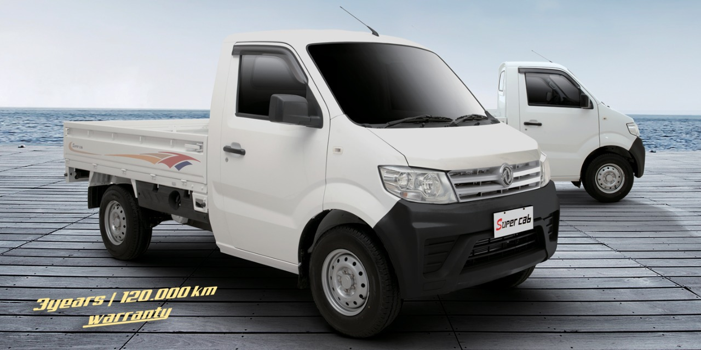
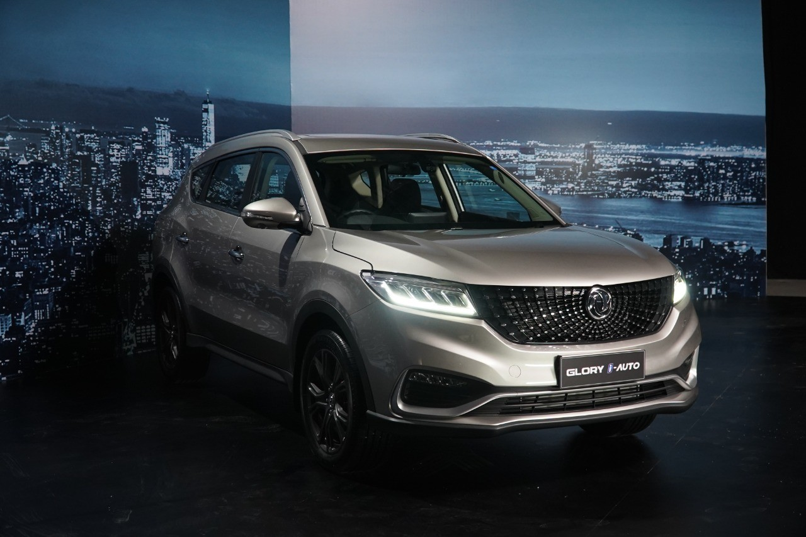

DFSK
Merek ini mungkin agak asing bagi Anda. Selain itu, merek ini merupakan akronim yang terdiri dari empat huruf yang digabungkan menjadi satu huruf. Jadi mari kita lihat lebih dekat grup DFSK yang beroperasi di Indonesia.
Ada pepatah Indonesia terkenal: "Kamu tidak tahu apa yang kamu tidak tahu". Pepatah ini sangat cocok dengan apa yang dibahas oleh Car Sentral untuk lebih mengenal brand DFSK di Indonesia. Brand ini pertama kali diperkenalkan ke publik pada ajang Jakarta Fair Kemayoran tahun 2017. Uniknya, DFSK menggunakan strategi yang sedikit berbeda dengan kompetitornya dari negeri Tirai Bambu. Jika Wuling akan datang dengan menggunakan mobil atau mobil penumpang, DFSK terlebih dahulu akan memasuki kelas bisnis dengan meluncurkan produk andalannya yaitu DFSK Supercab dengan slogan “Business Friend 3 Seater Spacious Pickup Truck”.
Produk DFSK Supercab cukup mampu menarik perhatian para pemilik usaha dan sektor komersial serta operator di kategori yang sama. Tentu saja, DFSK Supercab berada di kelas yang sama dengan truk Daihatsu GranMax, dan Suzuki Mega Carry DFSK Supercab menawarkan sesuatu yang berbeda dibandingkan dengan rival sekelasnya, yaitu bantuan darurat taksi dan unit yang tersedia dengan mesin diesel yang hemat bahan bakar. DFSK di Indonesia sendiri berada di bawah PT. Mobil yang indah. Perusahaan ini merupakan perusahaan otomotif hasil kerjasama antara Sokon Group Company Limited Hong Kong dan PT. Kaiser Motorindo Industri dari Indonesia.
Sebelumnya, Sokon Group bermitra dengan Dongfeng Motor Corporation, perusahaan mobil milik negara Tiongkok, yang memasarkan produk bermerek DFSK di pasar dunia. Di Indonesia, PT Sokonindo Automobile juga berperan sebagai perwakilan merek mobil penumpang DFSK. Tapi apa sebenarnya arti DFSK? DFSK adalah singkatan dari DONGFENG SOKON. DFSK berada di bawah naungan Dongfeng Motor Group, yang juga termasuk Dongfeng Honda, Dongfeng Nissan, Dongfeng Peugeot, Dongfeng Citroen, Dongfeng Renault, dan Dongfeng Kia.
| Kelebihan | Kekurangan |
|---|---|
| Garansi Paling Lama | AC Kurang Menyebar ke Seluruh Kabin |
| Layanan Purna Jual Belum Tersebar Luas | AC Kurang Menyebar ke Seluruh Kabin |
| Mesin Turbo Bertenaga Besar | Baris Ketiga Sangat Sempit |
| Spare part dan dealer banyak dan mudah dicari | |
| Kaya Fitur Keselamatan | |
| Fitur Keselamatan Kurang Responsif |